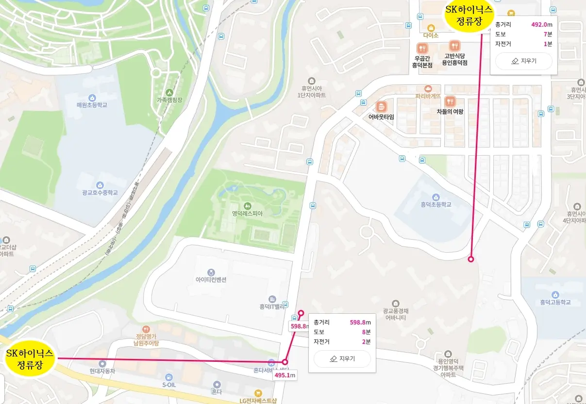
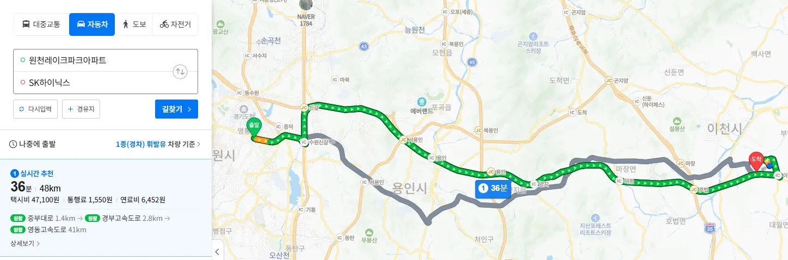

Q3. 광교풍경채는 셔세권? 광역버스 및 출퇴근 정보
1. '셔세권'의 의미와 광교풍경채 반도체 직주근접 입지
'셔세권'이란 주요 기업의 셔틀버스 정류장 + 역세권을 합친 단어로 직장인들이 출퇴근하기 편리한 입지를 의미합니다. 광교풍경채는 인근에 다수의 대기업 통근 노선과 흥덕역, 원천역 (29년 개통)이 있어 셔세권 대단지 아파트입니다.
① 원천레이크아파트 정류장 (구 홈플러스)
- 단지로부터의 거리: 약 700m (도보 약 7분 소요)
- 주요 특징: 대기업 통근버스가 다수 정차하는 거점 정류장 중 하나입니다. 인근 산업단지나 주요 오피스 권역으로 이동하는 직장인들이 주로 이용합니다.
② 흥덕이마트 정류장
- 단지로부터의 거리: 약 500m (도보 약 5분 소요)
- 주요 특징: 이마트와 함께 흥덕 상권이 주변에 잘 개발되어 있습니다.

▲ SK하이닉스 기업 통근버스 안내
2. 수원신갈IC 인접성을 통한 40분대 생활권
광교풍경채의 주요 교통 강점 중 하나는 도로망 연계성입니다. 출퇴근시 경부고속도로(수원신갈IC) 및 용인서울고속도로(흥덕IC)로 진입이 쉽습니다.
⏱️ 주요 거점 출퇴근 소요 시간 (광역버스/자차 기준)
- 판교 및 분당 업무지구: 약 20분대 소요
- 삼성전자 기흥/화성: 약 10분 소요
- SK하이닉스 이천: 약 40분 소요
- 서울 강남권 및 서초: 약 40분 소요

▲ 주요 고속도로 IC 연계 및 출퇴근 경로 지도